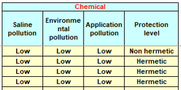

FIDES Mission profile¶
This section gather the questions related to a problem linked to FIDES mission profile
Space system and rocket launch environments? ¶
Does the FIDES database contain datas that takes into account space system and rocket launch environments?
FIDES is not based on some database like 217F. It was made from failure analyses performed by different companies. As no company from the Space industry was involved when FIDES was first developed, no such data from Space was used to build the models. Despite all of it, the FIDES models are based on physic of faillure principles and can be applied in every industry field. Nevertheless, they will not consider failures induced by the Space environment, which are generally evaluated through specific studies (radiations, impact of the vacuum, debris mitigation…). The NRPM study, founded by ESA since 2017 and allowing releasing a new handbook called Reliability.Space by end 2020, that you can find at www.reliability.space, demonstrated that FIDES could be applied, with some adaptations, to the Space environment.
Mission time : annual or calendar? ¶
We are considering the following satellite mission profile:
① Pre-launch function test , storage , transportation , launch are set
② Satellite operation phase. There is assumed to be 120 times during the mission profile
③ Orbit departure (once).
Although the actual satellite life is not one year, but due to the FIDES mission profile settings, the total life was converted to one year (8760h) and the time was set. Is it correct?
For Space applications, we do not model all of the phases, just the most important ones (for ex: Storage not to be considered if it is only 2 months vs a 10-year mission in orbit). For storage: this was the result of a discussion within the Space working group of the FIDES group. For launch: it has been analysed that the relative impact is too little to be considered (even with the huge mechanical stress). Also, we do not convert the mission time to the equivalent of a year duration (8760h), but we model it over the whole mission time (ex: 87600 h for a ten year mission) - it makes no difference in the end, and makes it easier to understand and to apply for space missions.
FIDES manual exemplifies the total time of all phases at 8760h. Is there any reason for this?
The reason is probably because the first types of mission profiles that came to mind when it was built were plane profiles. But for elements such as satellites, it is not possible, or at least does make little sense, to speak in “”mean year””. Though, in the FIDES guide, in the mission profile section, it is indicated that you can model the whole mission with its actual duration.
Chemical – protection level ¶
On the FIDES mission profile, under the chemical parameters, there is the protection level. What does it represents?
The protection level usualy stands for the hermeticity of the unit : hermetic or non hermetic. For space application, it is derived as « possibility to exchange with the outside » : on ground, it will be non hermetic ; during flight it will be hermetic For more information, please check the FIDES guideline TEXR-TN-00194.